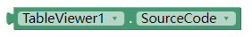

表格视图扩展
表格视图扩展,可以用来直接在ai中显示表格，并可以设置表格样式
更新记录
v9 as request of @TIMAI2, SetJavascript function added.It will inject javascript to end of body element before show the table. No script tag needed.
v8 add event OnShowTable, fired after ShowTable is called.
v7 add property TransparentBackground, designer only.
V6
- SetStyleSheet now can accept url to an external css file.
- add SetClass block, which can set class to a tag or id selector
- add ClearStyle block, which can clear all styles, including the native basic style(table border)
- bring back ShowTable. since this will greatly enhance the performance of the extension.
- add RunJs function and AfterRunJs event.
- add SetStyleWithJs function
v5
- 增加了OnScroll事件
v4
- 增加ScrollTo方法。
- 废弃ShowTable方法。
v3
- 增加了ClearTable块。清除以前设置的数据、所有样式。
- 其他修改，每行数据可以长度不同
v2
- 增加SetStyleSheet块，可以直接写样式表了。
- 增加ShowTable块，所有的数据和样式设置好以后，需要调用此块，否则表格不显示了。
- 增加了一个SourceCode属性块，调试时可能有用。
- 增加了HasHead和HasFoot属性，用来将第一行和最后一行数据设为表头或者表尾。默认是不包含的。
前言
本来有个教程，教大家如何显示表格，但是有网友反映还是不够简洁，现在我把这个方法进一步打包成了扩展，真正做到开箱即用。
先上图看看效果如何：
相关代码块
初始化
指定表格要显示在哪个布局之中（可以是垂直布局或者水平布局均可）
设置数据

data需要是一个列表的列表
每次设置数据，会覆盖前面的数据。
设置单个样式
样式设置完全是css的标准，具体请搜索如何写css的样式。
这个可以使用多次，每次设置一个选择器的一个属性。
selector 选择器
attribute 属性名
value 属性值
常用的selector：
| – | – | – | |
|---|---|---|---|
| 1. | table | 表格 | |
| 2. | th | 表头 | |
| 3. | tr | 行 | |
| 4. | td | 单元格 | |
| 5. | tr:nth-child(1) | 第n行 （所有偶数行可以写为tr:nth-child(2n)，奇数行就是tr:nth-child(2n+1)） | |
| 6. | td:nth-child(1) | 第n列 （奇数偶数列原理同上） | |
| 7. | #r1c1 | 第n行第n列的单元格 （注意别漏掉#，因为我已经将每个单元格的id设置为了r1c1格式） |
常用的attribute：
|–|–|–| |1. |background-color |背景色| |2. |color |文本颜色| |3. |padding |内边距| |4. |margin |外边距| |5. |width |宽度| |6. |height |高度| |7. |font-size |字号| |8. |border-width |边框宽度| |9. |border-color |边框颜色|
批量设置样式
如果你有很多样式要写，用上面的SetStyle就需要多个，比较麻烦，可以使用这个块，直接把样式表写在文本中。
这个块只能使用一次，后面调用会把前面的覆盖。所以把需要写的样式一次性都写在这里面。
清除样式
原来设置的所有数据和样式都被清空。
滚动表格
将表格滑动到某行某列（让该单元格可见）
内置常用的样式
返回网页源码 
是否包含表头
是否包含表尾

以下块都可以通过SetStyle块来实现，只是为了方便写成内置块。
设置单元格内边距

设置表头（第一行）背景色
目前只支持例如red、green这样，或者#abcdef这种16进制，不支持AppInventer中的颜色。（下同）
设置边框颜色
设置边框宽度
设置所有文本字号
表格显示完成事件
js执行完成事件
表格被点击事件
表格被点击时，返回点击位置的行、列、内容

表格滚动事件
表格滚动时（手动或通过代码）引发

示例
例子1：基本用法
例子2：高亮当前选中单元格
例子3：固定表格第一行。这样在上下滚动时，表头固定在屏幕上方。
例子4：合并单元格